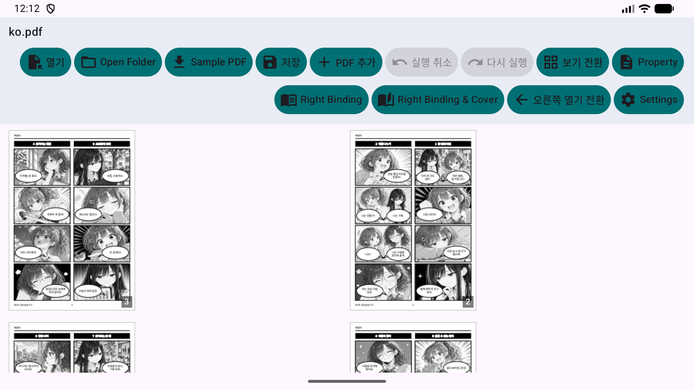
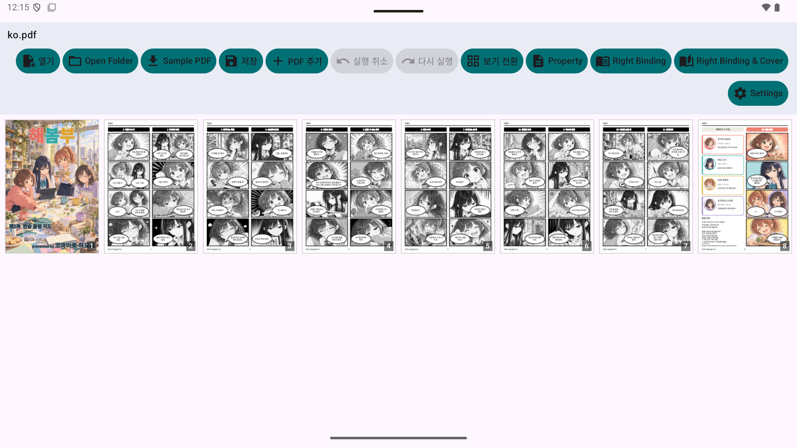
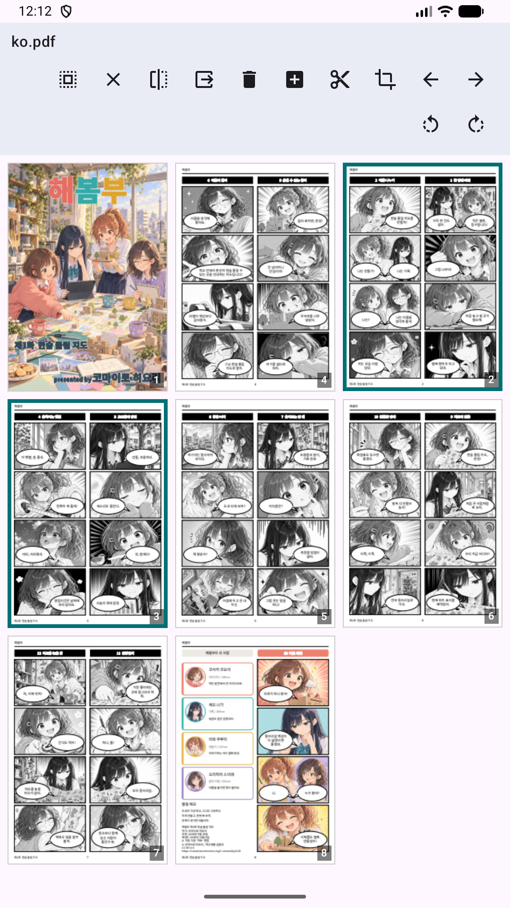
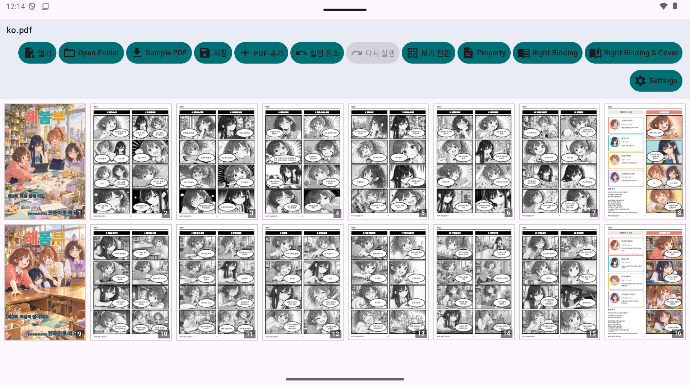
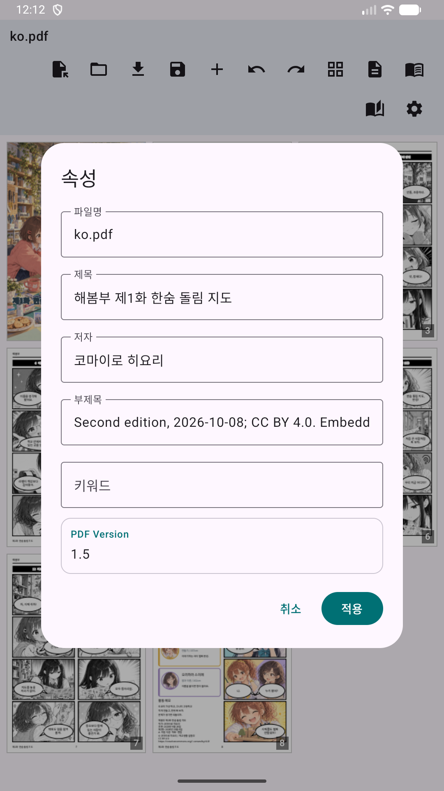
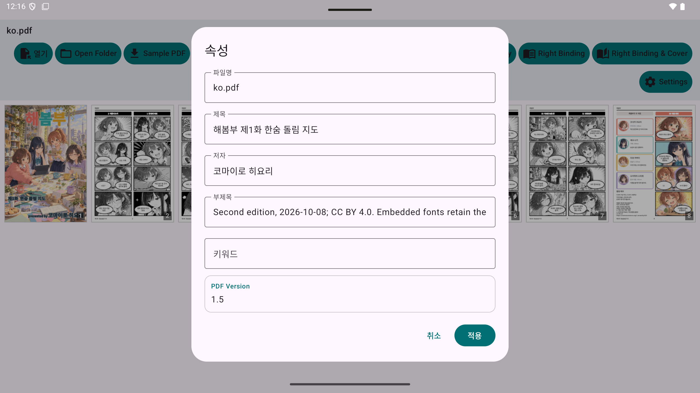
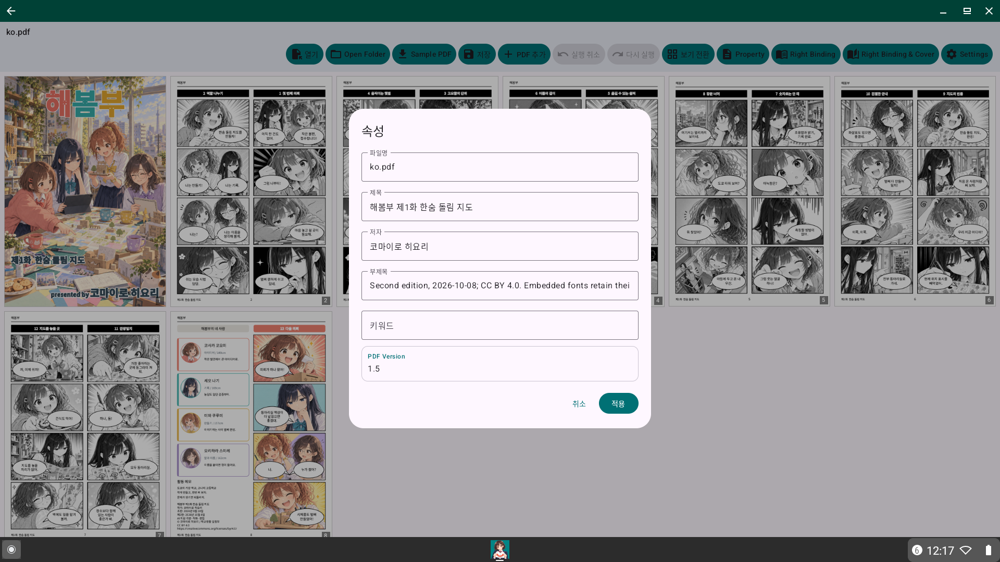

미히라키 PDF 유틸리티
양면(미히라키) 표시, 분할, 병합을 자유자재로. Android를 위한 직관적인 PDF 편집 도구.
양면(미히라키) 표시, 분할, 병합을 자유자재로. Android를 위한 직관적인 PDF 편집 도구.
미히라키 PDF 유틸리티는 독자와 크리에이터를 위해 설계된 다기능 도구입니다. 스캔한 책(지수이)의 정리, 문서 병합, 페이지 재정렬 등 직관적인 조작으로 원하는 대로 편집할 수 있습니다.

2페이지를 나란히 표시. 일본어 책과 만화에 적합한 우측 읽기(RTL) 완벽 지원.

양면 페이지를 두 페이지로 분할. 수직(좌우) 및 수평(상하) 분할 방향 지원.

썸네일을 드래그하는 것만으로 페이지 순서 정렬.

여러 PDF 파일을 하나로 병합하거나 기존 PDF에 페이지 추가.

스마트폰, 태블릿, Chromebook 등 다양한 Android 환경에서 쾌적하게 동작합니다.



앱을 테스트할 수 있는 샘플 PDF 만화를 다운로드하세요:
14개 언어와 17개 언어·지역 구분별 3화씩, 총 51개 PDF입니다. 스페인/중남미, 브라질/포르투갈, 대만/홍콩을 구분합니다. 홍콩판은 표준 문어 중국어이며 구어 광둥어판이 아닙니다. 다운로드 크기와 SHA-256을 검증하며 이전 PDF는 유지합니다.
'해봄부' 제1화·제2화
© 2026 코마이로 히요리
본 작품 중 공개자가 저작권 및 기타 허가 대상 권리를 보유한 부분은 Creative Commons 저작자표시 4.0 국제 (CC BY 4.0)로 제공됩니다.
재이용 시에는 작품명, 작가명 "코마이로 히요리", 원작품의 공개처, 라이선스에 대한 링크를 표시하고, 변경한 경우 그 사실을 명시해 주세요.
본 작품은 텍스트·이미지 제작 및 번역에 생성형 AI를 사용했습니다. 폰트 등 제3자에게 권리가 있는 소재에는 각각의 라이선스가 적용됩니다. 저작권 등에 의해 보호받지 않는 부분의 이용을 이 표시에 의해 제한하지 않습니다.
영어 동영상이며 YouTube에서 열립니다.